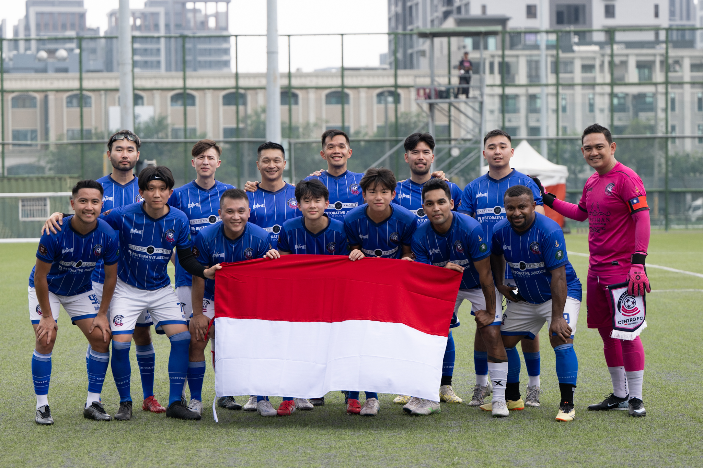
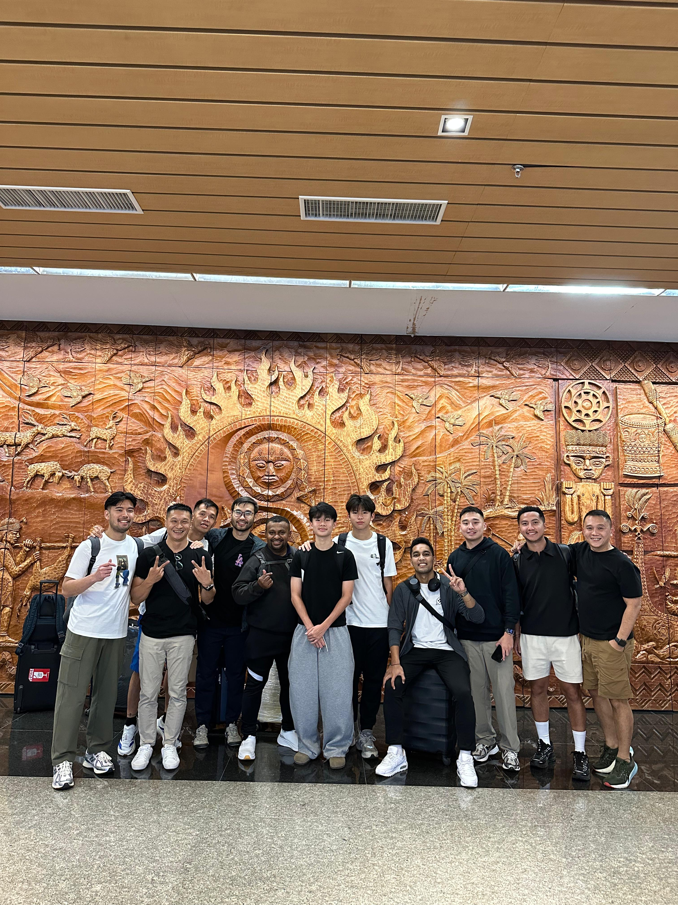
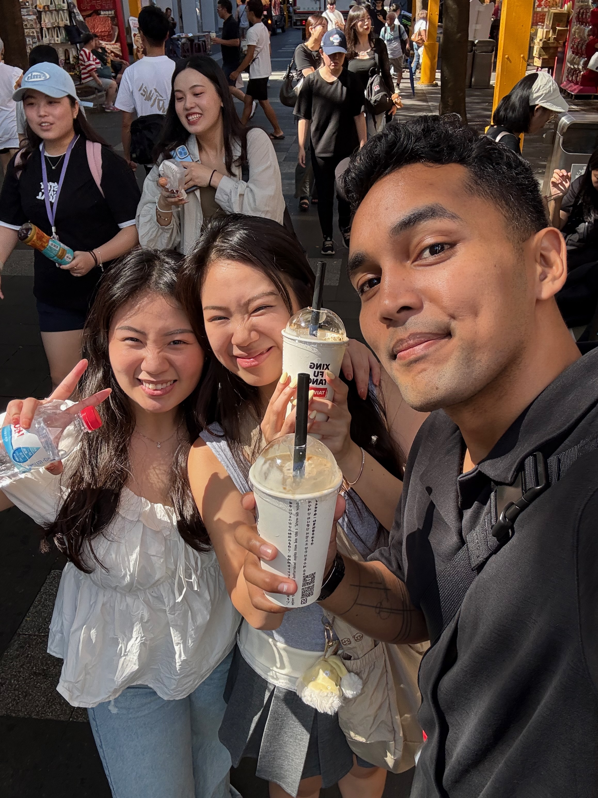
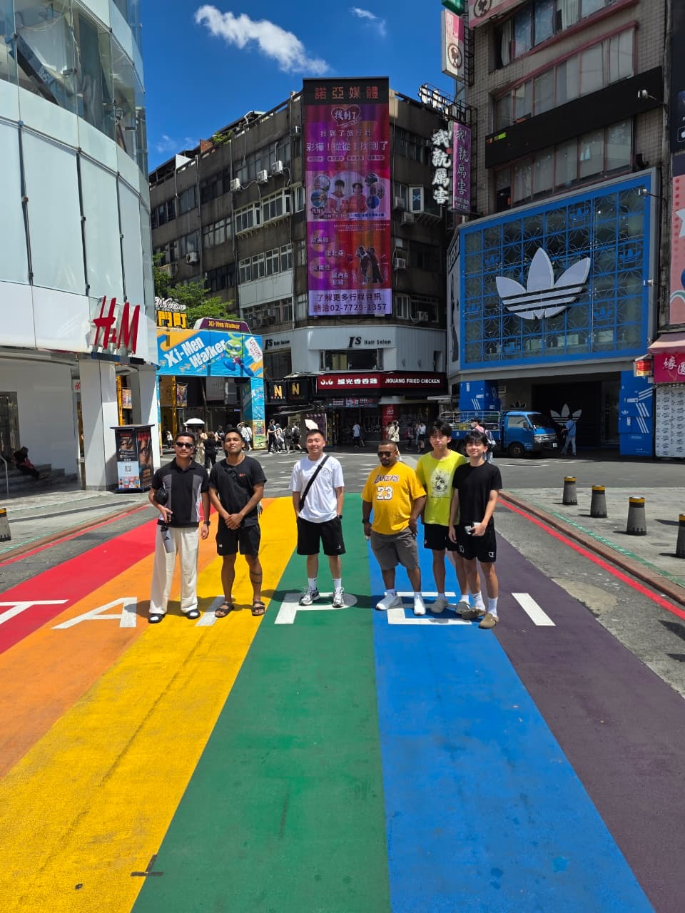
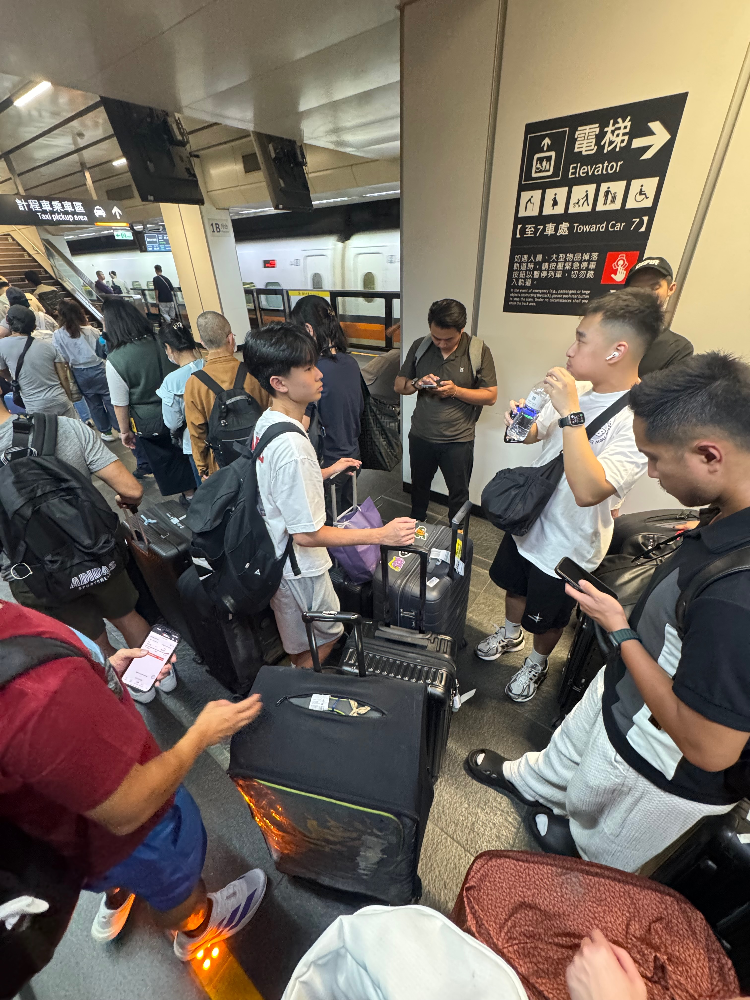
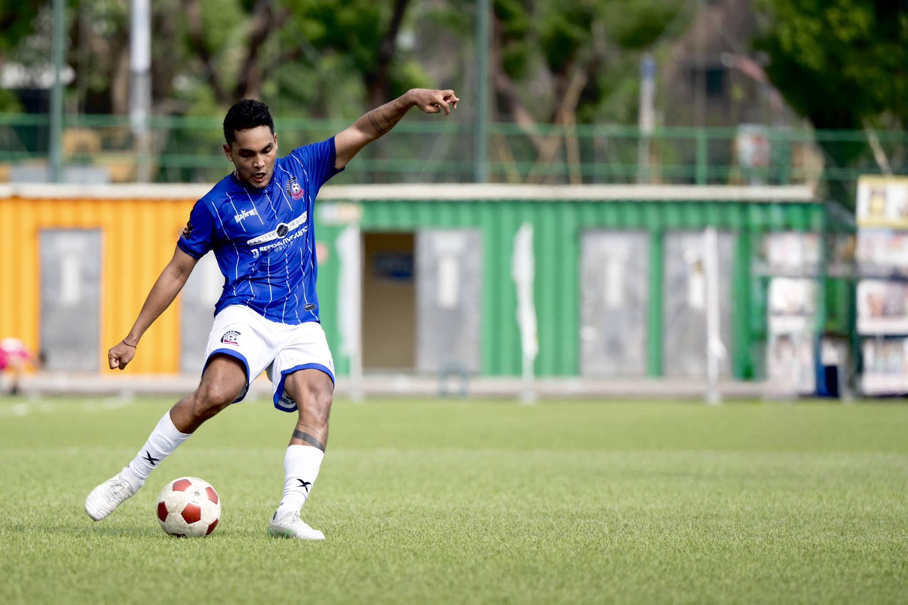
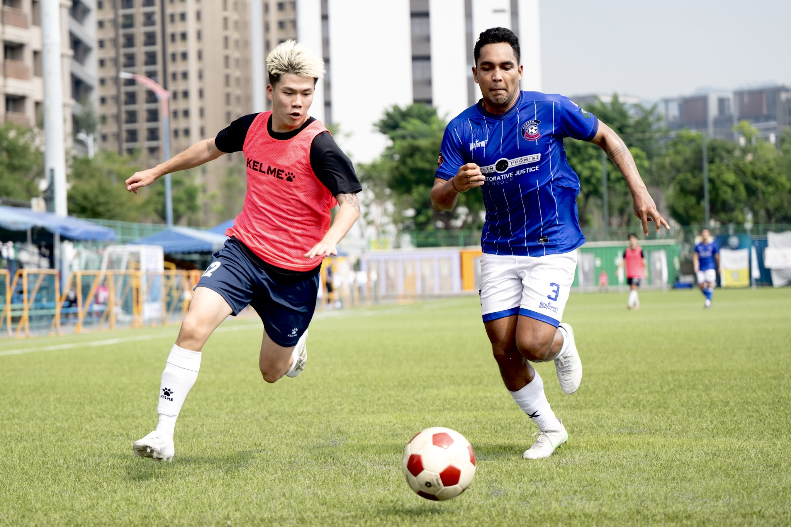
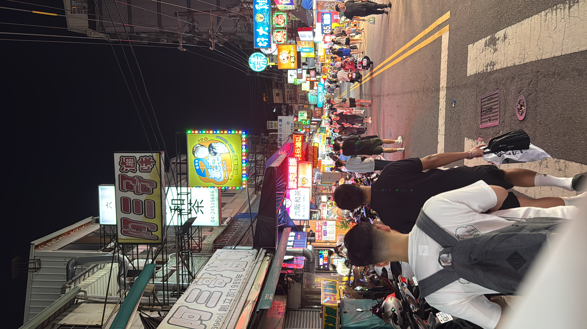
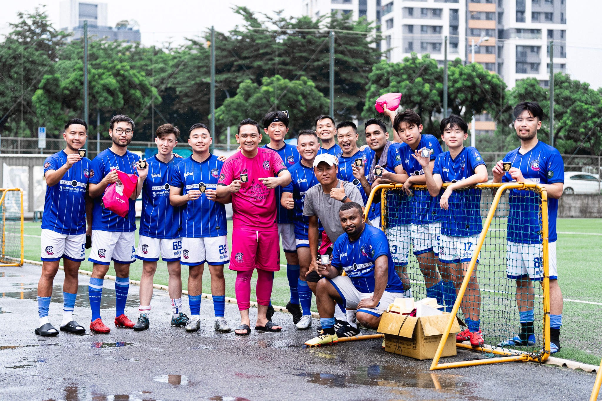

Life — Travel · Football
Got a phone call while drinking coffee. Mid-afternoon, laptop open, SEO notes on the side. The boss of Centro FC was on the line. "Are you free on 4th September?" That's it. That was the whole pitch. I said yes before even knowing where we were going.
Turned out: Taiwan. I genuinely thought it was going to be somewhere local. Taiwan was not on my radar at all. When I found out, I was very, very happy!
Visa sorted, flights booked. Two weeks of waiting that felt way longer than it should. I could not sit still.
We split flights. The rest of the team took EVA Air, me and one other took China Airlines. Big plane! Like, actually big, three rows of seats, wide-body, the kind where you feel like you're on a flying building. I always get excited boarding something that size. Turbulence still happened. I still didn't like it. But at least the plane was big enough to pretend I was okay!
We landed. The team was already there waiting. Taipei for the first time. Walked out and immediately liked the city. The layout, the cleanliness, the energy. First impression: this place has its act together.
Hotel, drop bags, and immediately back out the door. Hotpot restaurant. Big spread and the whole team ate with happiness. First meal in Taiwan and it already slapped.

Centro FC, Taoyuan International Airport. The trip starts here.
Next morning we had the full day free. Nowhere to be, no schedule. Just Taipei and whatever we wanted to do with it.
Hot. Genuinely, aggressively hot. But when are you ever going to be in Taipei for free? You go!
Headed to Ximending. Street food everywhere, all of it good, all of it exactly my kind of eating. At some point I split from the group — two friends of mine happened to be studying Mandarin in Taipei, so I went to find them. They knew the area so I just followed. We walked around Ximending for hours. Could've spent three days there and still not seen everything.


Ximending with the Taipei tourguide. Just kidding okay!
Night came, train to Taichung. Not just any train, the high-speed rail. It's fast. Actually fast. I sat there watching the city disappear behind me thinking this is the kind of infrastructure that makes a country feel serious about itself. Train dropped us in Taichung late at night, then straight for a quick dinner. I forget the name of the restaurant but I remember we ate like we hadn't eaten in three days.

High-speed rail to Taichung. This is the kind of infrastructure that makes a country feel serious.
September 6th came fast. Kickoff: 1pm. Outdoor. In Taiwan. In September. The sun had absolutely no chill. Four teams total — us, a Japanese team, a local university team from Taichung, and a squad from Hong Kong. Fourfeo format. Sounds fun on paper. Less fun when you realize you're doing it under direct sunlight at 1pm with three substitutes and fourteen players who are already sweating before warmup even starts.

Match day. Yep, that's me kicking the ball. No substitution, full 90. Worth it.
We finished second! Fourteen players, three substitutes, everyone cramping by the end. Even professional players would struggle in that heat with that setup. But everyone played fair, everyone played for fun. That's the only way it should be!
The Japanese players were something else. Most of them were 40, 50 years old. You'd think that changes how they play. It doesn't. Calm, composed, good vision, technically clean. Never gets old, Ojisan! I genuinely learned something watching them.
After the final whistle, handshakes, photos, the kind of good energy that happens between people who just competed and immediately respected each other. Oh, and it rained. Right at the end. Like the sky decided to cool everyone down after watching us suffer for 90 minutes. Too late, but thanks tho.

Centro FC. Blue, proud, and very very warm.
Half the team went back to the hotel. I did not!
So we went for hotpot again. I'd played a full 90 minutes in the afternoon heat without a single substitution, I was extremely hungry and completely justified in eating everything on the table!
After dinner, street food around Xitun District. More food! Someone tried to get me to eat insects. I declined immediately and without hesitation. I respect the culture but I am a meat person and that is final bro.

Xitun District after midnight. No insects were consumed.
Morning walk around Taichung before heading home. The city is clean. Seriously clean! Modern without feeling cold, organized without feeling sterile.
Then airport, then home.

End of tournament. Hot plus rain in the end, medals, and smiles. Worth every second.
Short trip. Four days, a lot of football, a lot of food, and a city I didn't expect to love as much as I did. A kid from Kalimantan playing football in Taiwan, didn't see that coming! Thanks Centro FC for the opportunity. Heard through the grapevine there might be another one. Different country, same chaos. I'd better be on that list.
See you on the next one.
← Back to Life